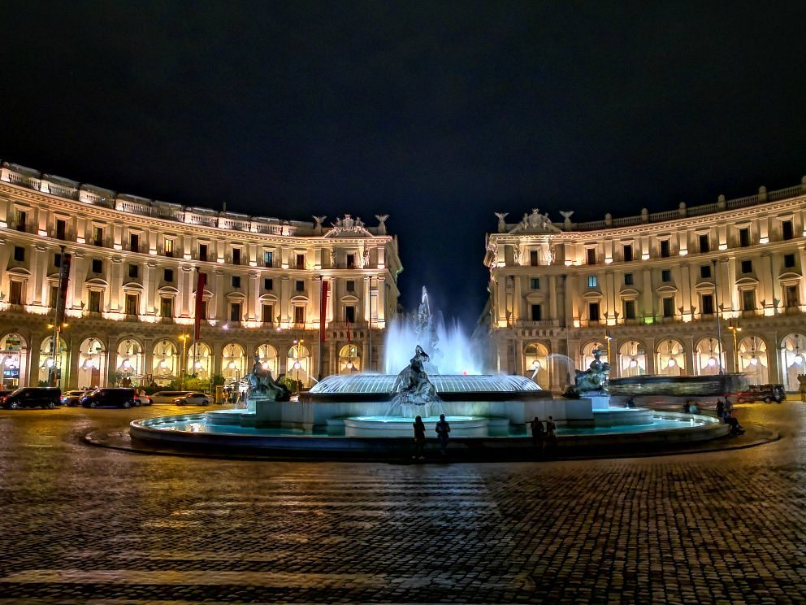

<!doctype html>
<html lang="en">

<head>
  <meta charset="utf-8">
  <meta name="viewport" content="width=device-width, initial-scale=1">
  <title>Piazze di Italia</title>
  <link href="https://cdn.jsdelivr.net/npm/bootstrap@5.3.0-alpha3/dist/css/bootstrap.min.css" rel="stylesheet"
    integrity="sha384-KK94CHFLLe+nY2dmCWGMq91rCGa5gtU4mk92HdvYe+M/SXH301p5ILy+dN9+nJOZ" crossorigin="anonymous">
  <link rel="import" href="./menu.html" id="import-menu">
</head>

</html>

<body>
  <div class="container-fluid">
    <div w3-include-html="menu.html"></div>
    <div class="card my-2 mx-auto" style="max-width: 1280px;">
      <div class="row g-0">
        <div class="col-md-8">
          
        </div>
        <div class="col-md-4">
          <div class="card-body">
            <h2 class="card-title mb-4">Piazza della Repubblica</h2>
            <h4 class="card-subtitle">Roma</h4>
            <p class="card-text fs-6 lh-base p-2">Piazza della Repubblica è una delle piazze più importanti di Roma. Essa fu costruita nel 1888 e si trova nel centro della città, vicino alla Stazione Termini. La piazza ha una forma circolare ed è circondata da edifici storici, tra cui il Palazzo delle Esposizioni e la Basilica di Santa Maria degli Angeli e dei Martiri. La piazza è stata dedicata alla Repubblica italiana dopo la sua proclamazione nel 1946. Fu infatti nel 1953 che una delibera del consiglio comunale capitolino decise di cambiare nome alla piazza da Esedra a Piazza della Repubblica, per onorare la nuova forma di governo che tutti i cittadini italiani scelsero proprio in questo giorno, il 2 giugno del 1946.</p>
            <p class="card-text fs-6 lh-base p-2">La storia di questa piazza risale all'antica Roma, quando qui si trovava il Circo Massimo, l'arena per le corse dei carri.</p>
          </div>
        </div>
      </div>
    </div>
  </div>
  <script src="import.js"></script>
  <script>includeHTML()</script>
  <script src="https://cdn.jsdelivr.net/npm/bootstrap@5.3.0-alpha3/dist/js/bootstrap.bundle.min.js"
    integrity="sha384-ENjdO4Dr2bkBIFxQpeoTz1HIcje39Wm4jDKdf19U8gI4ddQ3GYNS7NTKfAdVQSZe"
    crossorigin="anonymous"></script>
  <script src="https://cdn.jsdelivr.net/npm/@popperjs/core@2.11.7/dist/umd/popper.min.js"
    integrity="sha384-zYPOMqeu1DAVkHiLqWBUTcbYfZ8osu1Nd6Z89ify25QV9guujx43ITvfi12/QExE"
    crossorigin="anonymous"></script>

</body>

</html>